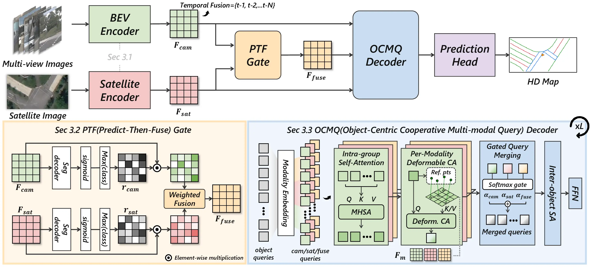
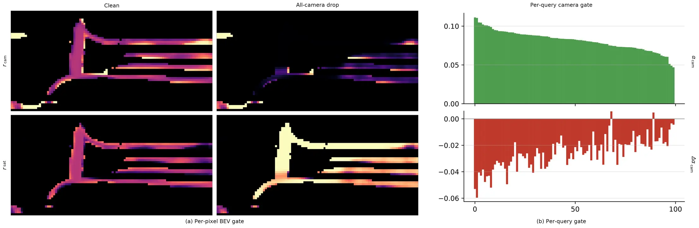
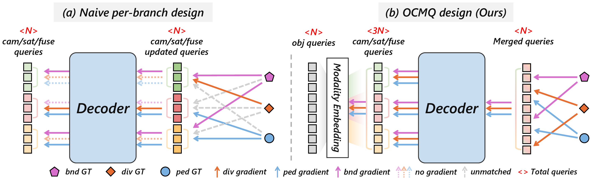

1Abstract
Despite recent advances in camera-based online HD map construction, these systems remain susceptible to sensor failures because of their reliance on onboard cameras. Satellite images, in contrast, remain available independently of real-time sensing conditions, since they are cached offline. Existing methods that use satellite images, however, primarily leverage them under nominal conditions, without explicitly addressing them as redundancy when a sensor degrades.
We propose ReSMap, a redundancy-aware camera–satellite fusion framework for robust online HD map construction. A Predict-then-Fuse (PTF) module fuses camera and satellite BEV features using each branch’s own prediction confidence as a per-pixel reliability weight, with no learned router. An Object-Centric Cooperative Multi-modal Query (OCMQ) decoder then propagates this isolation to the query level: each modality cross-attends only to its own BEV, and per-modality updates are merged through a learned per-token gate.
ReSMap achieves state-of-the-art performance on nuScenes across all splits and range settings. More importantly, it also sets a new state of the art under camera-failure scenarios, demonstrating that satellite images serve not only as a strong prior but as practical redundancy for robust online HD mapping.
2Method
LiDAR is bolted to the same onboard stack that fails, and SD maps carry topology but not lane-level geometry. A satellite tile is different in the one way that matters: it is fetched and cached before the drive, so no onboard fault can take it away. Two pieces spend that, one at the pixel and one at the query.

2.1 Predict-then-Fuse
Each branch segments the BEV on its own, and how confident it is at a pixel becomes that branch’s weight at that pixel. The weight is detached from the gradient, so the fusion never learns a preference between the two:
We call this the Self-Confidence Gate. The fallback is a closed-form property rather than a learned behaviour: as → 0, the fused feature converges to the satellite feature. Because the gating signal is a prediction confidence and not a raw-image statistic, it also holds up under failures never seen in training, such as cameras zeroed at inference.

2.2 Object-Centric Cooperative Multi-modal Query decoder
A standard DETR-style map decoder undoes this isolation: every query reads from a shared key/value pool that already mixes the three BEVs. The naive fix, one query pool per modality, is worse, because Hungarian matching then routes each ground-truth instance to whichever pool already explains it best, entangling classes with modalities. Dividers become a camera-only skill, boundaries a camera-only skill, crossings a fusion-only skill; when a modality fails, no other branch was ever supervised to take over.
OCMQ keeps a single object-query pool, so the matcher only ever sees one unified set, and builds the modality-specific updates inside each decoder layer instead. Three copies of the query set, each offset by a learnable modality embedding, cross-attend only to their own BEV, and a per-token softmax gate merges them back into one query. There is deliberately no residual to the previous layer, which a down-weighted modality would otherwise re-enter through and accumulate over. Every class therefore receives gradients from all three modalities, while contamination at inference is still controlled per token.

3Results
The main benchmark is the geographically non-overlapping split of nuScenes, where training and validation cover different parts of each city; the tabs over each table switch to nuScenes’ original split and to Argoverse 2. On nuScenes the satellite input is ego-aligned AID4AD tiles cropped to the BEV region of interest, on Argoverse 2 our own tiles from Google Maps. Except where marked, every baseline is retrained under the same evaluation conditions, following its own paper’s schedule.
3.1 Clean conditions
APp, APd and APb are average precision on pedestrian crossings, lane dividers and road boundaries, each averaged over Chamfer-distance thresholds of 0.5, 1.0 and 1.5 m (1.0, 1.5 and 2.0 m at 100 × 50 m); mAP is the mean of the three.
| Method | Venue | Mod. | Temp. | Ep. | APp | APd | APb | mAP | FPS |
|---|---|---|---|---|---|---|---|---|---|
| 60 × 30 m | |||||||||
| MapTracker† | ECCV’24 | C | ✓ | 72 | 45.9 | 30.0 | 45.1 | 40.3 | 13.5 |
| MapTRv2 | IJCV’24 | C+L | 110 | 18.8 | 29.5 | 61.7 | 36.6 | 7.3 | |
| DAMap | ICCV’25 | C+L | 110 | 19.2 | 32.8 | 66.1 | 39.4 | 7.2 | |
| SDTagNet | NeurIPS’25 | C+SD | 110 | 11.7 | 25.3 | 40.5 | 25.8 | 9.6 | |
| PriorDrive‡ | AAAI’26 | C+SD | ✓ | 110 | 44.7 | 35.5 | 47.3 | 42.5 | 8.2 |
| SatforHDMap | ICRA’24 | C+SA | 110 | 44.1 | 12.1 | 24.8 | 27.0 | 14.1 | |
| ReSMap (ours) | NeurIPS’26 | C+SA | 24 | 70.6 | 24.2 | 46.2 | 47.0 | 16.1 | |
| ReSMap (ours) | NeurIPS’26 | C+SA | ✓ | 24 | 76.1 | 26.7 | 56.3 | 53.0 | 10.2 |
| 100 × 50 m | |||||||||
| MapTracker† | ECCV’24 | C | ✓ | 70 | 45.9 | 24.3 | 38.4 | 36.2 | 13.4 |
| MapTRv2 | IJCV’24 | C+L | 24 | 16.6 | 27.6 | 45.0 | 29.8 | 7.6 | |
| DAMap | ICCV’25 | C+L | 24 | 13.7 | 27.6 | 48.7 | 30.0 | 7.2 | |
| SDTagNet | NeurIPS’25 | C+SD | 30 | 11.9 | 25.5 | 30.8 | 22.5 | 8.4 | |
| SatforHDMap | ICRA’24 | C+SA | 24 | 40.0 | 9.9 | 10.4 | 20.1 | 14.2 | |
| ReSMap (ours) | NeurIPS’26 | C+SA | 24 | 74.5 | 30.2 | 44.9 | 49.9 | 15.9 | |
| ReSMap (ours) | NeurIPS’26 | C+SA | ✓ | 24 | 77.6 | 35.0 | 51.3 | 54.7 | 10.2 |
Table 1. Online HD map construction on the geographically non-overlapping split. C, L, SD, SA denote camera, LiDAR, SD map, and satellite images; Temp. marks temporal memory or historical-prediction priors. FPS is measured on a single RTX 4090. †Consistent-GT supervision. ‡Numbers taken from the original paper. Best per column in bold.
| Method | Venue | Mod. | Temp. | Ep. | APp | APd | APb | mAP | FPS |
|---|---|---|---|---|---|---|---|---|---|
| 60 × 30 m | |||||||||
| InteractionMap‡ | CVPR’25 | C | ✓ | 110 | 75.2 | 75.0 | 76.1 | 75.5 | – |
| MapTracker† | ECCV’24 | C | ✓ | 72 | 80.0 | 74.1 | 74.1 | 76.1 | – |
| MapTRv2 | IJCV’24 | C+L | 24 | 65.6 | 66.5 | 74.8 | 69.0 | – | |
| Mask2Map‡ | ECCV’24 | C+L | 24 | 76.5 | 76.6 | 82.1 | 78.4 | – | |
| DAMap | ICCV’25 | C+L | 24 | 67.7 | 72.4 | 77.1 | 72.5 | – | |
| SDTagNet | NeurIPS’25 | C+SD | 30 | 61.5 | 63.1 | 61.4 | 62.0 | – | |
| PriorDrive‡ | AAAI’26 | C+SD | ✓ | 110 | 78.0 | 82.0 | 81.6 | 80.5 | – |
| SatforHDMap | ICRA’24 | C+SA | 24 | 54.9 | 50.3 | 60.5 | 55.2 | – | |
| SatMap‡ | arXiv’26 | C+SA | 110 | 73.9 | 72.2 | 72.2 | 72.7 | – | |
| SATMapTR‡ | arXiv’25 | C+SA | 24 | 73.9 | 72.3 | 75.1 | 73.8 | – | |
| ReSMap (ours) | NeurIPS’26 | C+SA | 24 | 91.2 | 78.8 | 78.5 | 82.8 | – | |
| ReSMap (ours) | NeurIPS’26 | C+SA | ✓ | 24 | 91.5 | 81.5 | 81.8 | 84.9 | – |
Table 1. The same comparison on the original split of nuScenes, where training and validation cover overlapping regions and road layouts seen in training reappear at evaluation. †Consistent-GT supervision. ‡Numbers taken from the original paper. FPS is not measured on this split. Best per column in bold.
| Method | Venue | Mod. | Temp. | Ep. | APp | APd | APb | mAP | FPS |
|---|---|---|---|---|---|---|---|---|---|
| 60 × 30 m | |||||||||
| MapTracker† | ECCV’24 | C | ✓ | – | 70.0 | 75.1 | 69.0 | 71.3 | – |
| DAMap | ICCV’25 | C+L | – | – | – | – | – | – | |
| SDTagNet | NeurIPS’25 | C+SD | – | 64.3 | 70.8 | 68.4 | 67.8 | – | |
| SatforHDMap | ICRA’24 | C+SA | – | – | – | – | – | – | |
| ReSMap (ours) | NeurIPS’26 | C+SA | ✓ | – | 75.3 | 75.1 | 73.3 | 74.6 | – |
Table 1. The same comparison on the geographically non-overlapping split of Argoverse 2 at 60 × 30 m, with our own ego-aligned tiles from Google Maps and every baseline retrained under the nuScenes protocol. †Consistent-GT supervision. FPS is not measured on this dataset. Best per column in bold; APd is a tie at this precision.
The margin grows with range. At 60 × 30 m ReSMap leads the best prior method by 10.5 mAP; at 100 × 50 m, where camera evidence thins out with distance, by 18.5. The satellite branch is cheap to carry: 16.1 FPS, faster than the camera-only baseline and about twice the LiDAR- and SD-fused ones.
3.2 Camera failure
Robustness is measured by zeroing the front camera, the three front cameras, and all six cameras at inference time, replacing each dropped view with a blackout image.
| Method | Mod. | Temp. | Ep. | Clean | Front-1 | Front-3 | All |
|---|---|---|---|---|---|---|---|
| MapTracker† | C | ✓ | 70 | 40.3 | 23.0 −42.9% | 10.8 −73.2% | 0.1 −99.8% |
| MapTRv2 | C+L | 110 | 36.6 | 32.2 −12.0% | 29.5 −19.4% | 23.8 −35.0% | |
| DAMap | C+L | 110 | 39.4 | 35.8 −9.1% | 34.2 −13.2% | 29.2 −25.9% | |
| SDTagNet | C+SD | 110 | 25.8 | 19.8 −23.3% | 14.5 −43.8% | 4.0 −84.5% | |
| SatforHDMap | C+SA | 110 | 27.0 | 21.5 −20.4% | 21.3 −21.1% | 14.3 −47.0% | |
| ReSMap (ours) | C+SA | 24 | 47.0 | 45.1 −4.0% | 43.4 −7.7% | 40.9 −13.0% | |
| ReSMap (ours) | C+SA | ✓ | 24 | 53.0 | 50.0 −5.7% | 44.4 −16.2% | 36.0 −32.1% |
Table 2. Camera dropout at 60 × 30 m on the geographically non-overlapping split. Front-1, Front-3, and All zero out the front camera, the three front cameras, and all six cameras at inference. Each cell shows mAP and the relative change from clean. Best per column in bold.
| Method | Mod. | Temp. | Ep. | Clean | Front-1 | Front-3 | All |
|---|---|---|---|---|---|---|---|
| MapTracker† | C | ✓ | 70 | 76.1 | 41.1 −46.0% | 17.0 −77.7% | 0.1 −99.9% |
| SafeMap‡ | C | 24 | 52.5 | 42.4 −19.2% | – | – | |
| MapTRv2 | C+L | 24 | 69.0 | 62.3 −9.7% | 55.5 −19.6% | 41.3 −40.1% | |
| DAMap | C+L | 24 | 72.5 | 62.4 −13.9% | 54.8 −24.4% | 35.3 −51.3% | |
| SDTagNet | C+SD | 30 | 62.0 | 47.1 −24.0% | 38.7 −37.6% | 14.5 −76.6% | |
| SatforHDMap | C+SA | 24 | 55.2 | 48.7 −11.8% | 48.2 −12.7% | 31.8 −42.4% | |
| ReSMap (ours) | C+SA | 24 | 82.9 | 81.2 −2.1% | 80.3 −3.1% | 78.7 −5.1% | |
| ReSMap (ours) | C+SA | ✓ | 24 | 84.9 | 82.0 −3.4% | 77.9 −8.2% | 62.5 −26.4% |
Table 2. Camera dropout on the original split of nuScenes, at 60 × 30 m. ‡Numbers taken from the original paper; SafeMap reports single-view dropout only. Best per column in bold.
| Method | Mod. | Temp. | Ep. | Clean | Front-1 | Front-3 | All |
|---|---|---|---|---|---|---|---|
| MapTracker† | C | ✓ | – | 71.3 | 64.4 −9.7% | 30.0 −57.9% | 0.2 −99.8% |
| DAMap | C+L | – | – | – | – | – | |
| SDTagNet | C+SD | – | 67.8 | 64.6 −4.7% | 52.3 −22.8% | 18.6 −72.6% | |
| SatforHDMap | C+SA | – | – | – | – | – | |
| ReSMap (ours) | C+SA | ✓ | – | 74.6 | 70.7 −5.1% | 59.2 −20.5% | 30.8 −58.7% |
Table 2. Camera dropout on the geographically non-overlapping split of Argoverse 2, with our own ego-aligned tiles from Google Maps. Unlike the curated AID4AD imagery on nuScenes, these tiles are not matched in time to the drives and are used without alignment refinement, so they keep the staleness and localization error a deployed system would see. Every baseline is retrained under the nuScenes protocol. †Consistent-GT supervision.
4Qualitative results
Surround-view input, the satellite tile, and the predicted vector map for each method, first on clean input and then with the cameras dropped.
5Paper
@inproceedings{kim2026resmap,
title = {ReSMap: Recasting Satellite Priors for Robust and
Accurate Online HD Map Construction},
author = {Kim, Kyungmin and Lee, Sumin and Jeong, Sungoh and
Lim, DoHyun and Park, Seonghyun and Hwang, Soonmin},
booktitle = {Advances in Neural Information Processing Systems
(NeurIPS)},
year = {2026}
}
Page and volume numbers follow once the proceedings appear. Satellite imagery follows the ego-aligned tiles released with AID4AD; nuScenes is used under its non-commercial licence.